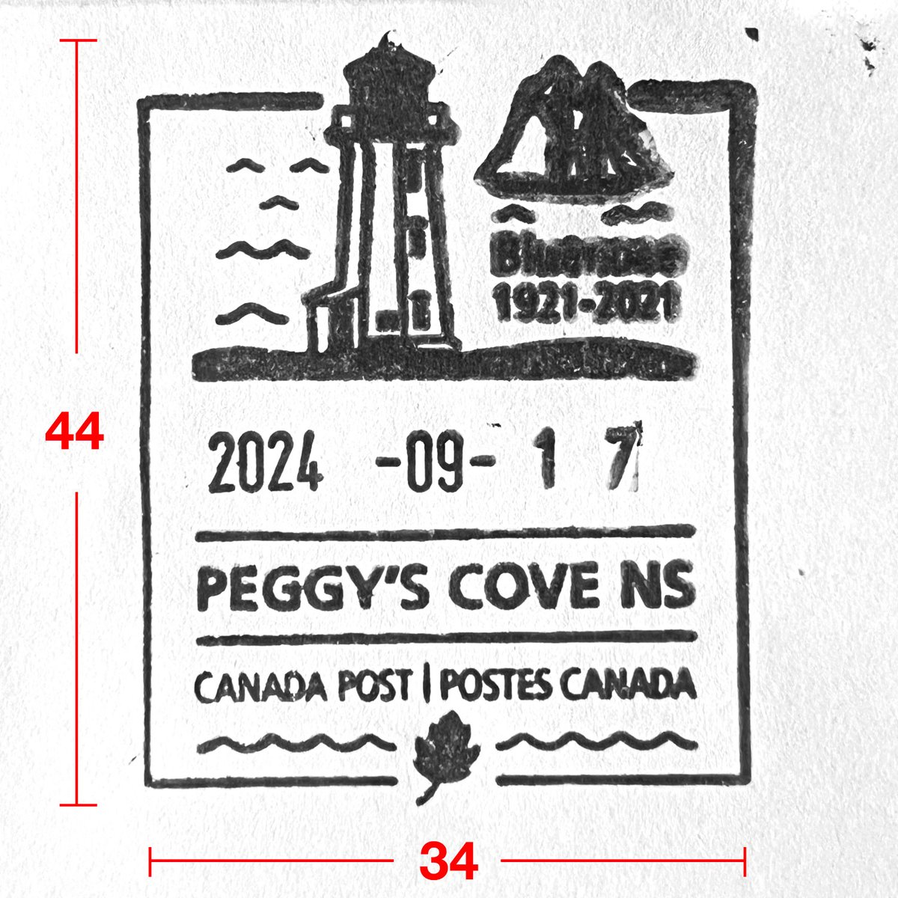

Peggy's Cove pictorial cancel
Bluenose 1921-2021
- Status
- Active
- Run dates
- 2020-01-01 to 2031-12-31
- Design
- "Bluenose 1921-2021"; Peggy"s Cove Lighthouse
- Ink colour
- Black
- Designer
- Unknown
- Post office
- Peggy's Cove
The Sou’wester, Att. Marcy
178 Peggys Point Road
Peggy's Cove, NS
B3Z 3S2 - Subjects
- lighthouse, architecture, building, Bluenose, vessel, boat, transportation, maritime
- Notes
- Peggy's Cove no longer has a postmaster. The Sou'wester, a local restaurant and gift shop, sells stamps and has the cancellation. Address postmarking requests to Marcy, The Sou'wester, 178 Peggys Point Road, Peggys Cove, NS B3Z 3S2.
Collect it by mail. Send your stamped covers, with a stamped return envelope, to the post office address above (check the notes first). How to collect pictorial cancels by mail · en français
 Chester PORacing Regatta Since 1858 / Course de voiliers depuis 1858
Chester PORacing Regatta Since 1858 / Course de voiliers depuis 1858 Halifax CSCExplosion 1917
Halifax CSCExplosion 1917 Halifax STN CentralHaunted Canada
Halifax STN CentralHaunted Canada Halifax STN CentralExplosion 1917
Halifax STN CentralExplosion 1917